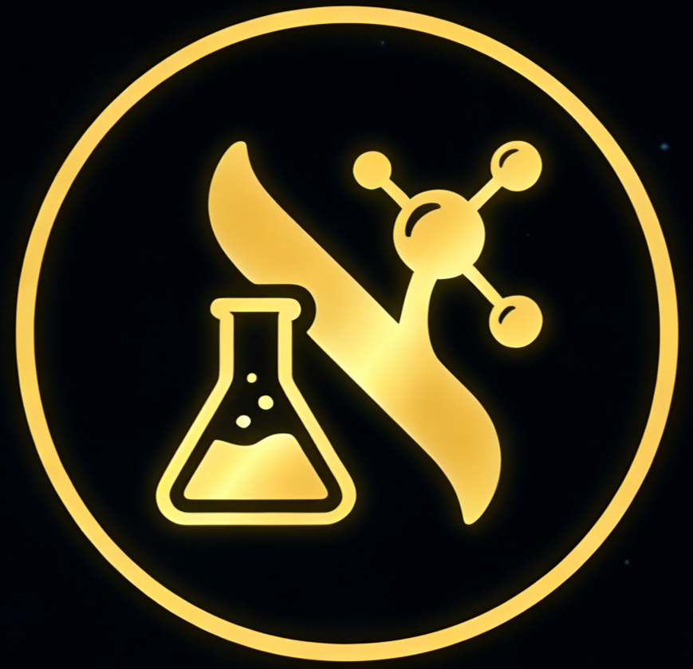
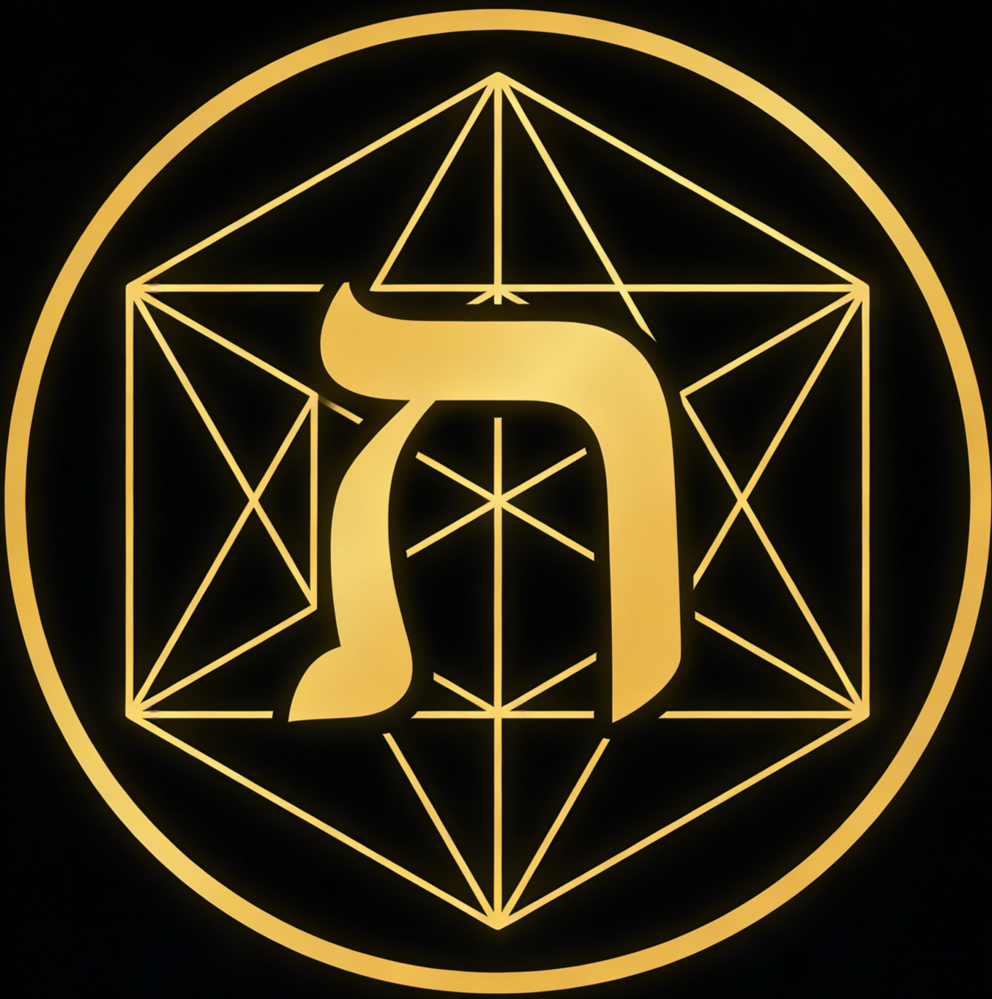

We are translators and explorers of the market's Aleph
我们是市场"阿莱夫"的译者与探索者
Through rigorous mathematics and computation, we translate infinite market chaos into finite, actionable alpha. We are not merely participants, but contemplators and engineers dedicated to deciphering its deep code.
What is The Alephain Guild?
The Alephain Guild 是什么？
We begin with a shared vision. In the endless noise and data deluge of the market, we glimpse a hidden geometric structure—not mere trends or patterns, but a singularity like Borges' "Aleph": a point in finite space that simultaneously contains all prices, all emotions, all information, and all possibilities.
Vision
愿景
Our ultimate pursuit is to infinitely approach the fundamental structure of the market's "Aleph."
We are not satisfied with describing phenomena; we seek to understand principles.
We do not chase transient trends; we search for enduring patterns. Our vision is to construct
an evolving cognitive and computational framework that can:
Translate Chaos
翻译混沌
Transform market surface noise into understandable, computable signal structures.
Measure Infinity
度量无限
Define and quantify the finite, sustainable "alpha" region within infinite possibility space.
Forge Artifacts
铸造圣器
Temper our cognition into automated alchemical tools with exceptional robustness and adaptability.
Mission of Exploration
探索之使命
We dedicate ourselves to fundamental market research. We ask: "What fundamentally drives price movement?" "How does liquidity generate and annihilate within structures?" "How can herding effects and reflexivity be mathematized?" Our research does not necessarily point to immediate trading, but aims to deepen fundamental understanding of market cosmology.
Mission of Alchemy
炼金之使命
We temper the insights gained from exploration into "philosopher's stones"—our quantitative strategies and trading systems—through rigorous mathematical modeling and computational engineering. This process adheres to the alchemical laws of falsifiability, traceability, and explainability.
Mission of Guardianship
守护之使命
We guard our knowledge, our capital, and our reputation. Through extreme risk management, strict operational discipline, and technical redundancy design, we ensure the Guild's ship of exploration preserves its core and continues sailing through any market storm.
Core Values
核心价值
Rationality First
理性至上
Data and logic are the only yardstick, overcoming all intuition and bias.
Source Inquiry
本源探究
Never satisfied with phenomena, always asking deeper "why".
Discipline Forged
纪律炼成
Transform cognition into repeatable, verifiable automated processes.
Wisdom Symbiosis
智慧共生
Establish rigorous, collaborative ethics between human intelligence and artificial intelligence.
First Principles
第一性原理
First principles are the indisputable starting points for all our reasoning, modeling, and decision-making. They are not derived from empirical induction but from metacognition of market essence. Like axioms in Euclidean geometry, they are self-evident and support our entire methodological edifice.
"Begin with principles, end with performance; be loyal to logic, reverent to the unknown."
— Principles Maxim — 原理箴言
Alpha Alchemy: The Four-Phase Cycle
阿尔法炼金术：四相循环
Our research process is modeled as a closed-loop alchemical four-phase cycle, with each phase corresponding to core methodological documents.
Insight
洞察
Identify anomalies and define falsifiable "true problems" from chaos.
Modeling
建模
Translate hypotheses into precise mathematical models and computable logic.
Refinement
炼成
Forge strategies in historical backtesting, embedding risk management.
Verification
验证
Real-market adjudication, strict attribution, distinguishing alpha from luck.
Technical Philosophy
技术哲学
Algorithm Ethics
算法伦理
Avoid exacerbating market fragility, beware of "golem" backlash, consider fairness implications.
Code as Research
代码即研究
Reproducibility as sacred principle, clarity above cleverness, modularity and testability.
Data Reverence
数据敬畏
Understand data lineage and scars, beware of "numerical alchemy", respect privacy and compliance.
Brand Ecosystem
品牌生态
Within a unified philosophical framework, specialized entities each fulfill their roles.

Alchymia Labs
Quantitative Alchemy Laboratory
Alchymia Labs is responsible for "translating" market chaos into actionable alpha, much like ancient alchemists sought to transform base metals into gold. The logo incorporates imagery of retort flasks and transformation, symbolizing the process of quantitative refinement that ultimately yields the "philosopher's stone" of alpha.

Tesseract Trading
High-Dimensional Execution
Tesseract Trading specializes in high-dimensional, precise trading execution. The logo abstracts the Aleph lines into a tesseract (hypercube) projection, representing the ability to understand and operate in market dimensions invisible to ordinary participants, utilizing geometric structures for execution.
Design Principle: All sub-brand logos are philosophical and aesthetic derivatives of the parent "Seal of Aleph," maintaining structural unity (golden outer circle), core unity (Aleph letter variant), color unity (black background, gold lines), and typographic unity (Inter Bold).